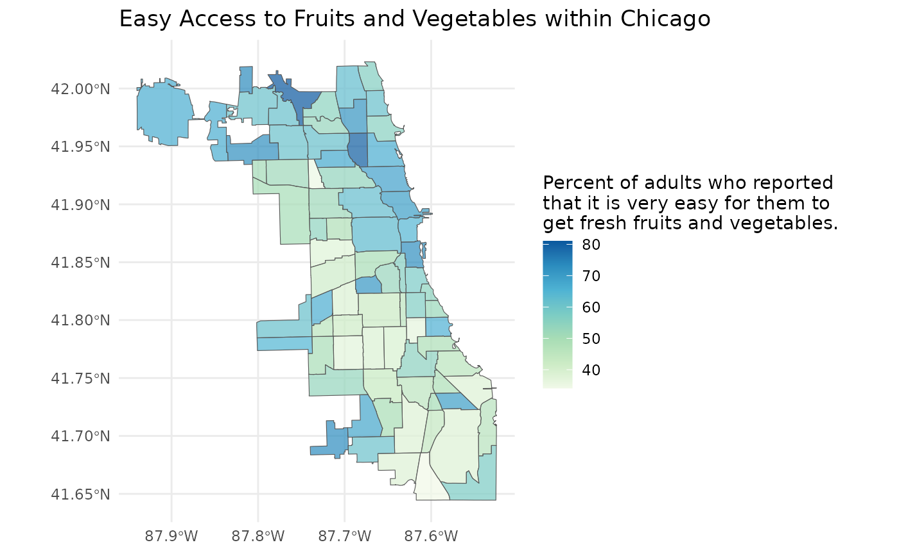

Typical Usage
typical_usage.RmdDiscover indicators
We can list all the topics (aka indicators) present within Chicago
Health Atlas using cha_topics(). The most important column
here is the topic_key which can be used to identify the
topic within subsequent functions.
topics <- cha_topics(progress = FALSE)
topics
#> # A tibble: 403 × 7
#> topic_name topic_key topic_description topic_units subcategory_name
#> <chr> <chr> <chr> <chr> <chr>
#> 1 9th grade education… EDA Residents 25 or … % of resid… Education
#> 2 ACA marketplace enr… ENR Number of plan s… plan selec… Access to Care
#> 3 Accidents mortality VRAC Number of people… count of d… Injury & Violen…
#> 4 Accidents mortality… VRACR Age-adjusted rat… per 100,00… Injury & Violen…
#> 5 Active business lic… CHANVYI Count of active … licenses p… Income
#> 6 Adult asthma HCSATH Number of adults… count of a… Chronic Disease
#> 7 Adult asthma rate HCSATHP Percent of adult… % of adults Chronic Disease
#> 8 Adult binge drinking HCSBD Number of adults… count of a… Alcohol & Drug …
#> 9 Adult binge drinkin… HCSBDP Percent of adult… % of adults Alcohol & Drug …
#> 10 Adult diabetes HCSDIA Number of adults… count of a… Chronic Disease
#> # ℹ 393 more rows
#> # ℹ 2 more variables: subcategory_key <chr>, category <chr>Often, you may have an topic area that you are interested in
exploring. You can explore these topic areas using
cha_topc_subcategories().
subcategories <- cha_topic_subcategories()
subcategories
#> # A tibble: 30 × 3
#> subcategories_name subcategories_key category_name
#> <chr> <chr> <chr>
#> 1 Access to Care access-to-care Clinical Care
#> 2 Quality of Care quality-of-care Clinical Care
#> 3 Community Safety community-safety-1 Physical Environment
#> 4 Housing & Transit housing-transit Physical Environment
#> 5 Pollution pollution Physical Environment
#> 6 Resource Availability resource-availability Physical Environment
#> 7 Behavioral Health behavioral-health Morbidity
#> 8 Chronic Disease chronic-disease-1 Morbidity
#> 9 Infectious Disease infectious-disease-1 Morbidity
#> 10 Injury & Violence injury-violence-1 Morbidity
#> # ℹ 20 more rowsYou can use a subcategory_key to subset the list of
topics too.
cha_topics("diet-exercise")
#> # A tibble: 20 × 7
#> topic_name topic_key topic_description topic_units subcategory_name
#> <chr> <chr> <chr> <chr> <chr>
#> 1 Adult fruit and veg… HCSFV "Number of adult… count of a… Diet & Exercise
#> 2 Adult fruit and veg… HCSFVP "Percent of adul… % of adults Diet & Exercise
#> 3 Adult physical inac… HCSPA "Number of adult… count of a… Diet & Exercise
#> 4 Adult physical inac… HCSPAP "Percent of adul… % of adults Diet & Exercise
#> 5 Adult soda consumpt… HCSS "Number of adult… count of a… Diet & Exercise
#> 6 Adult soda consumpt… HCSSP "Percent of adul… % of adults Diet & Exercise
#> 7 Easy access to frui… HCSFVA "Number of adult… count of a… Diet & Exercise
#> 8 Easy access to frui… HCSFVAP "Percent of adul… % of adults Diet & Exercise
#> 9 High School fruit a… YRFV "Number of Chica… count of s… Diet & Exercise
#> 10 High School fruit a… YRFVP "Percent of Chic… % of stude… Diet & Exercise
#> 11 High School physica… YRPA "Number of Chica… count of s… Diet & Exercise
#> 12 High School physica… YRPAP "Percent of Chic… % of stude… Diet & Exercise
#> 13 High School physica… YRPI "Number of Chica… count of s… Diet & Exercise
#> 14 High School physica… YRPIP "Percent of Chic… % of stude… Diet & Exercise
#> 15 High School soda co… YRSO "Number of Chica… count of s… Diet & Exercise
#> 16 High School soda co… YRSOP "Percent of Chic… % of stude… Diet & Exercise
#> 17 Middle School physi… YRMPA "Number of Chica… count of s… Diet & Exercise
#> 18 Middle School physi… YRMPAP "Percent of Chic… % of stude… Diet & Exercise
#> 19 Middle School physi… YRMPI "Number of Chica… count of s… Diet & Exercise
#> 20 Middle School physi… YRMPIP "Percent of Chic… % of stude… Diet & Exercise
#> # ℹ 2 more variables: subcategory_key <chr>, category <chr>Once we have a topic or topics in mind, we can explore what
populations, time periods, and geographic scales that data is available
for using cha_coverage(). Again, the most important columns
here are the key columns which can be used to specify the data
desired.
coverage <- cha_coverage("HCSFVAP", progress = FALSE)
coverage
#> # A tibble: 168 × 6
#> population_key population_name population_grouping period_key layer_key
#> <chr> <chr> <chr> <chr> <chr>
#> 1 "" Full population "" 2022-2023 place
#> 2 "" Full population "" 2023 place
#> 3 "" Full population "" 2021-2022 place
#> 4 "" Full population "" 2022 place
#> 5 "" Full population "" 2020-2021 place
#> 6 "" Full population "" 2021 place
#> 7 "" Full population "" 2020 place
#> 8 "" Full population "" 2018 place
#> 9 "" Full population "" 2017 place
#> 10 "" Full population "" 2016 place
#> # ℹ 158 more rows
#> # ℹ 1 more variable: layer_name <chr>Import tabular data
Now, we can import our data using cha_data() specifying
the keys we identified above.
ease_of_access <- cha_data(
topic_key = "HCSFVAP",
population_key = "",
period_key = "2022-2023",
layer_key = "neighborhood"
)
ease_of_access
#> # A tibble: 77 × 4
#> neighborhood measure value standardError
#> <chr> <chr> <dbl> <dbl>
#> 1 1714000-35 HCSFVAP 57.9 6.86
#> 2 1714000-36 HCSFVAP 54.7 6.25
#> 3 1714000-37 HCSFVAP 45.5 7.45
#> 4 1714000-38 HCSFVAP 56.9 5.86
#> 5 1714000-39 HCSFVAP 52.4 10.5
#> 6 1714000-4 HCSFVAP 71.7 5.49
#> 7 1714000-40 HCSFVAP 36.8 6.73
#> 8 1714000-41 HCSFVAP 65.9 7.52
#> 9 1714000-42 HCSFVAP 48.4 8.27
#> 10 1714000-1 HCSFVAP 56.7 4.96
#> # ℹ 67 more rowsImport spatial data
We can check what layers we can import with
cha_layers().
layers <- cha_layers()
layers
#> # A tibble: 4 × 4
#> layer_name layer_key layer_description layer_url
#> <chr> <chr> <chr> <chr>
#> 1 Community areas neighborhood The city of Chicago is divided into 77… https://…
#> 2 ZIP Codes zip The ZIP code is a basic unit of geogra… https://…
#> 3 Census Tracts tract-2020 Census tracts are small geographies de… https://…
#> 4 Chicago place Cities, towns, villages, and boroughs,… https://…Since we just downloaded our data at the Community Area level, let’s
import the Community Area geographic layer with
cha_layer().
community_areas <- cha_layer("neighborhood")Let’s map our data!
library(dplyr)
#>
#> Attaching package: 'dplyr'
#> The following objects are masked from 'package:stats':
#>
#> filter, lag
#> The following objects are masked from 'package:base':
#>
#> intersect, setdiff, setequal, union
library(ggplot2)
map_data <- community_areas |>
left_join(ease_of_access, join_by(geoid == neighborhood))
plot <- ggplot(map_data) +
geom_sf(aes(fill = value), alpha = 0.7) +
scale_fill_distiller(palette = "GnBu", direction = 1) +
labs(
title = "Easy Access to Fruits and Vegetables within Chicago",
fill = "Percent of adults who reported\nthat it is very easy for them to\nget fresh fruits and vegetables."
) +
theme_minimal()
plot
Our map looks pretty good, but perhaps there is a point layer that
may provide more insight into the spatial variation of the ease of
access to fruits and vegetables. We can use
cha_point_layers() to list all the point layers available
in the Chicago Health Atlas.
point_layers <- cha_point_layers()
point_layers
#> # A tibble: 10 × 3
#> point_layer_name point_layer_uuid point_layer_descript…¹
#> <chr> <chr> <chr>
#> 1 Acute Care Hospitals - 2023 67f58fa0-0dfa-4… ""
#> 2 Chicago Public Schools - 2023 5a449804-a2cc-4… ""
#> 3 Federally Qualified Health Centers -… 22f48fd6-ee98-4… ""
#> 4 Federally Qualified Health Centers (… f224b3ce-6d83-4… ""
#> 5 Grocery Stores 7d9caf3c-75e6-4… "All chain grocery st…
#> 6 Hospitals 8768fad7-65a2-4… "https://hifld-geopla…
#> 7 Nursing Homes 379a55c7-e569-4… "https://hifld-geopla…
#> 8 Pharmacies and Drug Stores 93ace519-6ba2-4… "All chain pharmacies…
#> 9 Skilled Nursing Facilities - 2023 93bc497d-3881-4… ""
#> 10 WIC Offices - 2023 7c8e9992-4e25-4… ""
#> # ℹ abbreviated name: ¹point_layer_descriptionGrocery store locations may be an important aspect of the ease of
access to fruits and vegetables, we can import this layer by providing
the point_layer_uuid to cha_point_layer().
grocery_stores <- cha_point_layer("7d9caf3c-75e6-4382-8c97-069696a3efbf")Now that we have imported our grocery stores, let’s layer them on top of our map.
plot +
geom_sf(data = grocery_stores, size = 0.5)
As expected, it seems that the areas with more grocery stores have a higher percent of adults who report that it is very easy to get fresh fruits and vegetables.
This is a typical use case for the ChicagoHA, in which
we explored every function that ChicagoHA has to offer. Now
it’s time for you to explore.